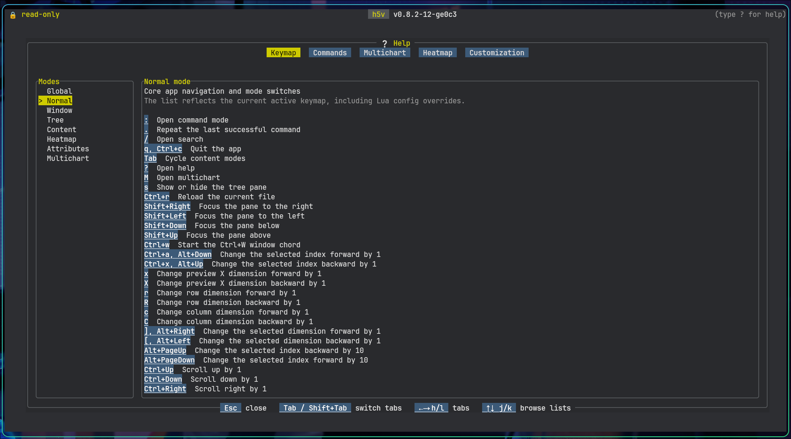
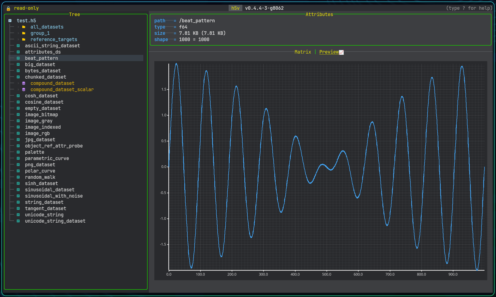
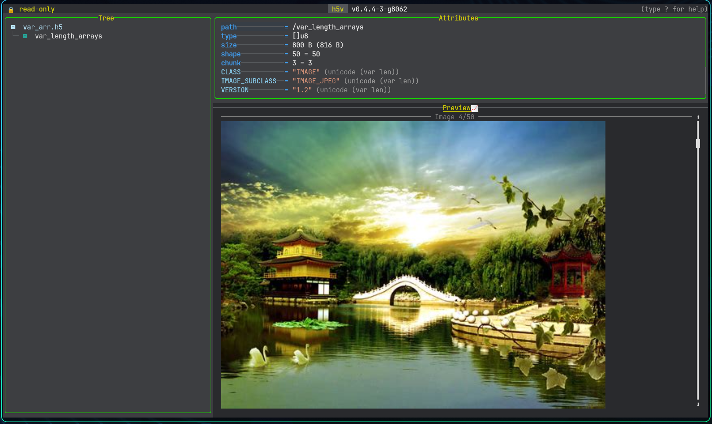
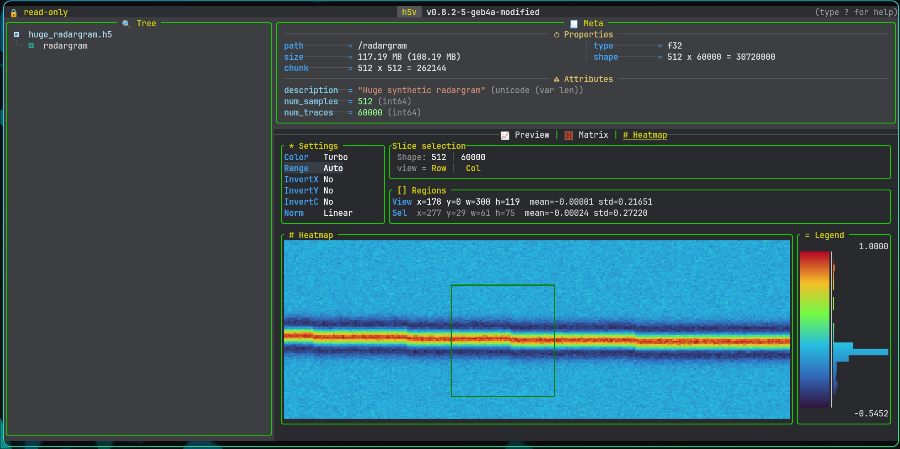
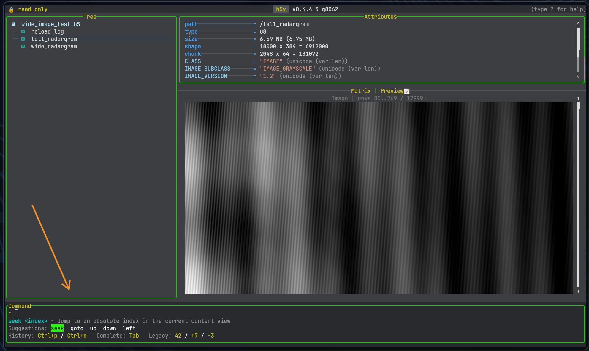
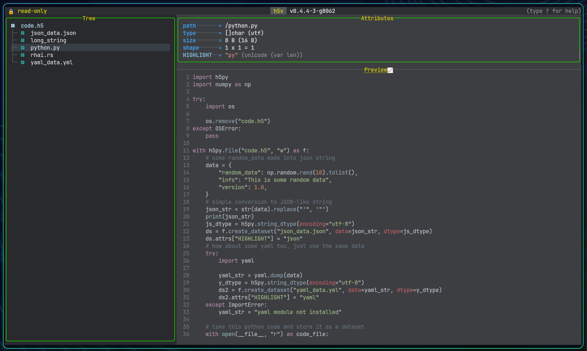

Introduction
h5v is a terminal HDF5 viewer and editor.

It provides:
- tree navigation for groups, datasets, links, and projected compound fields
- preview, matrix, heatmap, image, and schema views
- attribute inspection and editing
- command and startup-script automation
- multichart comparison
Start with Installation and Quick start.
Installation
Recommended: shell installer
Linux and macOS can install the latest release directly from GitHub:
curl -fsSL https://raw.githubusercontent.com/DanielHauge/h5v/main/install.sh | sh
The shell installer also works in Git Bash, MSYS2, and Cygwin on Windows. It prefers conventional install locations: /usr/local/bin when writable, ~/.local/bin on Unix-like systems without a writable system prefix, and %LOCALAPPDATA%\Programs\h5v\bin on Windows shells.
Options:
install.sh --version VERSION --install-dir PATH --repo OWNER/REPO --dry-run
Other install paths
PowerShell
irm https://raw.githubusercontent.com/DanielHauge/h5v/main/install.ps1 | iex
Homebrew
brew tap DanielHauge/h5v https://github.com/DanielHauge/h5v.git
brew install h5v
Scoop
scoop bucket add h5v https://github.com/DanielHauge/h5v
scoop install h5v/h5v
Prebuilt binaries with cargo-binstall
cargo binstall h5v
Build from source
cargo install h5v
On Linux, source builds may require native packages such as cmake, pkg-config, libfontconfig, freetype, and expat development headers.
Terminal graphics
h5v works in plain terminals, but image and chart previews look best with a real graphics protocol such as Kitty.
Links:
- Kitty graphics protocol: https://sw.kovidgoyal.net/kitty/graphics-protocol/
- ratatui-image: https://github.com/ratatui/ratatui-image
- terminal support gallery: https://benjajaja.github.io/ratatui-image-screenshots/
If graphics probing causes trouble:
h5v --no-terminal-graphics path/to/file.h5
That disables graphics probing and uses the safer text-only path.
Compatibility mode
If your terminal also struggles with icons or line drawing:
h5v --compatibility path/to/file.h5
This switches to simpler symbols and disables terminal graphics probing.
You can also enable it with H5V_COMPATIBILITY_MODE or h5v.compatibility = true.
H5V_COMPATIBILITY_MODE=true h5v path/to/file.h5
H5V_COMPATIBILITY_MODE=off h5v path/to/file.h5
Precedence:
--compatibilityh5v.compatibilityH5V_COMPATIBILITY_MODE- default
false
For config details, see Configuration and theming. For display problems, see Troubleshooting and limits.
To make the environment variable permanent:
# ~/.bashrc or ~/.zshrc
export H5V_COMPATIBILITY_MODE=true
# ~/.config/fish/config.fish
set -gx H5V_COMPATIBILITY_MODE true
Invalid values are rejected.
Write mode
h5v opens files read-only unless you pass -w:
h5v -w path/to/file.h5
Without -w, edit actions report that the file must be reopened in write mode.
Quick start
Open a file:
h5v path/to/file.h5
h5v -w path/to/file.h5
Press ? to open the in-app help.
Try the bundled example
h5v examples/h5v-example.h5 --script examples/h5v-example.h5v
Regenerate the example file if needed:
python scripts/generate_example_h5.py
Default workflow
- Move around the tree on the left.
- Inspect the selected node in the content pane.
- Inspect or edit metadata in the attributes pane.
Useful keys:
?opens the in-app helpTabswitches between preview and matrix when both exist:opens the command minibuffermadds the current preview to multichart, including group previews driven byH5V_PREVIEW_EXPRMopens or closes multichart mode
Help
Press ?. The in-app help is the reference for keys and commands.
The help view has six tabs:
KeymapCommandsMultichartHeatmapHealthCustomization
Use Tab / Shift+Tab or h / l to switch tabs.
In Keymap, Commands, and Customization, use j / k, arrow keys, Home, End, g, and G to move through the left-hand list.
Example paths:
| Path | What to look at |
|---|---|
/signals/sine_wave | Basic numeric chart preview |
/matrices/cube | Matrix mode with dimension selectors |
/images/truecolor_rgb | Inline truecolor image |
/images/wide_grayscale | Wide pannable image window |
/images/varlen_png_frames | Variable-length encoded image frames |
/compound/nested_records | Recursive compound schema view |
/compound/nested_records/window | Projected fixed-array field with matrix editing |
/metadata/attributes_demo | Mixed attribute types and references |
/group_preview | Group-level chart preview driven by H5V_PREVIEW_EXPR |
First commands
:goto /signals/sine_wave
:goto /group_preview
:mode matrix
:help mchart
Script a startup
Inline commands:
h5v examples/h5v-example.h5 \
-c "goto /signals/sine_wave" \
-c "mchart add" \
-c "goto /signals/cosine_wave" \
-c "mchart add" \
-c "mchart show"
Script file:
h5v examples/h5v-example.h5 --script examples/h5v-example.h5v
Dry-run:
h5v --script-test --script examples/h5v-example.h5v
See Multichart, Configuration, and Startup scripting.
Navigation and layout
Pane model
h5v has three panes:
- the tree pane for HDF5 structure and selection
- the content pane for preview, matrix, schema, image, and multichart views
- the attributes pane for metadata inspection and editing
Wide terminals use a side-by-side layout. Narrow terminals stack the panes. Search takes over the working area.
Moving focus
Shift+ arrow keys to move between panes directlyCtrl+W, thenh/j/k/lfor vim-style pane navigation
The sidebar can be toggled with s or Ctrl+W o.
Tree navigation
j/kor arrow keys move the selectionhandlcollapse or expand nodesEnterorSpacetoggles the current nodeg/Gjump to the top or bottomu/Ctrl+UandCtrl+Dmove by larger chunks
When the current selection is previewable, m adds it to the multichart workspace.
Mouse support:
- a click selects the row under the cursor
- clicking the already selected group or compound container toggles it
- repeated clicks on
Load morekeep expanding long child lists
Content modes
The content pane changes with the selected node:
- numeric datasets prefer chart-style preview
- matrixable datasets can switch to matrix mode
- numeric datasets with at least two non-singleton dimensions can switch to heatmap mode
- scalar and string data render as text
- HDF5 image datasets render inline as images
- compound container nodes show a recursive schema view
- file nodes show filesystem metadata
- groups stay previewable even when they only show an empty-state card
Use Tab to switch modes when more than one is available.
Search and help
/enters search mode:opens the command minibuffer?opens the built-in help.repeats the last successful command
The help view has tabs for Keymap, Commands, Multichart, Heatmap, and Customization. Tabs with a left-hand list use the normal list navigation keys.
See Controls reference and Commands.
Controls
Press ? inside h5v.
The in-app Keymap tab is the source of truth for controls. It reflects the shipped defaults and any h5v.keymaps Lua overrides.
Start with these:
?opens help:opens the command minibufferTabswitches preview, matrix, and heatmap when more than one is availableShift+ arrows orCtrl+Wthenh/j/k/lmoves focus between panesmadds the current previewable selection to multichartMenters multichart
Use the matching help tabs for view-specific controls:
Keymapfor active bindingsCommandsfor minibuffer commandsMultichartfor chart workspace behaviorHeatmapfor viewport and ROI behavior
HDF5 feature support
h5v can browse groups, datasets, links, broken links, and synthetic nodes created for projected compound fields.
Matrixable and previewable data types
| Type family | Preview | Matrix | Notes |
|---|---|---|---|
| Signed integers | Yes | Yes | Rendered as numeric data |
| Unsigned integers | Yes | Yes | Rendered as numeric data |
| Floating point | Yes | Yes | Rendered as numeric data |
| Boolean | Yes | Yes | Routed through unsigned rendering |
| Enum | Yes | Yes | Uses colored symbols and labels, with optional dataset-defined overrides |
| Fixed strings | Text | Yes | Fixed strings are read with a 32768-byte limit |
| Variable strings | Text | Yes | Good for inline string inspection |
| Compound | Schema or projected preview | Projected fields and compound roots | Root compound matrix mode uses one selected dataset dimension for rows and direct fields for columns |
| Fixed arrays | Limited | No | Standalone fixed arrays are not matrixable through the main renderer |
| Variable arrays | Limited | No | Not matrixable through the main matrix renderer |
| References | Limited | No | Attribute navigation follows object and dataset-region references; no dedicated matrix renderer |
Matrix mode is only available when a dataset is matrixable and its shape has at least one dimension larger than 1. Single-value datasets stay in scalar preview mode.
Strings and highlighting
String datasets can carry a HIGHLIGHT attribute with an extension hint such as json, py, or yml. If it is absent, h5v falls back to the dataset name extension.
Enum styling overrides
Enum datasets can override the default symbol and color cycle with:
SYMBOLS: a 1D string attribute, aligned with ascending numeric enum value orderCOLORS: a 1D string attribute, aligned with ascending numeric enum value order
Color values accept named colors and #RRGGBB. See Configuration reference.
Group preview expressions
Groups can opt into preview rendering with a variable-length string attribute named H5V_PREVIEW_EXPR. The value uses the same expression syntax as multichart.
Image metadata handling
Datasets that follow the HDF5 image convention are rendered inline as images. See Images and Image conventions.
Properties vs attributes
type, size, shape, chunk, link, and path are properties shown in the Properties section. They are not HDF5 attributes.
Those built-in properties include:
typesizeshapechunklinkpath
Preview types
Numeric chart preview

h5v renders numeric datasets as a line plot over a selected one-dimensional slice.
- active x-axis dimension
- fixed indices for the other dimensions
- visible slice when the data is segmented
Use x / X, [ / ], and the index controls to move through higher-dimensional data.
Large previews are segmented at 250000 elements. PageUp / PageDown move between segments.
If a slice contains only invalid numeric values such as NaN or infinity, h5v reports that bounds cannot be computed.
Scalar and string preview
Scalar datasets render as text. This covers:
- floating-point scalars
- signed and unsigned integer scalars
- fixed and variable strings
Scalar enums use the enum renderer, including optional SYMBOLS and COLORS overrides.
String datasets can carry syntax-highlighting hints. Resolution order:
HIGHLIGHTattribute on the dataset- dataset name extension such as
.pyor.yml
File preview
Selecting the root file node shows filesystem metadata such as path, size, timestamps, permissions, and open mode.
Schema preview for compounds
Selecting the root of a compound dataset shows a recursive schema preview.
Projected compound leaves follow their field type:
/compound/nested_records/gainpreviews like a numeric field/compound/nested_records/windowis matrixable and editable as one value per line- projected enum leaves can inherit custom symbol/color styling from dataset metadata
- projected multi-value string arrays stay matrix-only instead of attempting chart preview
Group preview
If a group has a variable-length string attribute named H5V_PREVIEW_EXPR, h5v evaluates it with the same syntax as multichart and renders the result in the preview pane.
The bundled example includes /group_preview:
(!/group_preview/time, (!/group_preview/value - #/group_preview/offset) * #/group_preview:scale)
Press m on that group to add the same expression to multichart.
Image preview
Datasets recognized as HDF5 images render inline in the content pane. See Images for behavior and Image conventions for the required metadata.

Matrix views

When matrix mode is available
Matrix mode appears when the current dataset or projected compound field is matrixable and has more than one effective element. Use Tab to move between preview and matrix mode when both are available.
Dimension selection
For datasets with more than two dimensions, h5v exposes selectors for:
- the row axis
- the column axis
- the currently selected extra dimension
- the active index value for fixed dimensions
Dimensions with size 1 are forced to index 0. The row and column axes must stay distinct, and the selected-dimension controls let you walk a higher-dimensional array one slice at a time.
Rendering behavior
Numeric values
Numeric datasets render as dense tables with one line per row. Column widths are sized for readable values and a minimum width of 24 characters.
Enums
Enums render with symbol and color mapping so repeated categories are easier to scan visually.
Strings
String matrices render inline with widths adjusted to the visible content.
Compound fields
Compound container roots can render in matrix mode as a read-only table with one row along the selected record dimension and one column per direct field. Horizontal scrolling moves across fields, while any additional dataset dimensions remain fixed to the currently selected indices. Individual projected leaf fields can also render in matrix mode once you drill down to a matrixable field.
Practical workflow
Use matrix mode when:
- the shape is dense enough that spatial layout matters more than trend shape
- you need to compare neighboring values directly
- a chart preview hides too much structure in a higher-dimensional slice
Switch back to preview mode when trend shape matters more than cell-by-cell inspection.
Heatmap
Heatmap is the image-style view for numeric datasets with at least two non-singleton dimensions.

It is available only when:
- compatibility mode is off
- terminal image rendering is available
What it shows
- a rendered 2D slice
- slice/page context
- settings
- viewport stats
- optional selection stats
- legend and histogram
Settings
The settings panel controls:
- colormap
- range mode
- invert x
- invert y
- invert colors
- normalization
Built-in range modes include Auto, MIN/MAX, Clip 1-99%, Sigma +-2sigma, and Winsor 2-98%.
Use Up / Down to move between settings and Left / Right to change the selected value. Click a settings row to focus it directly.
Selection and viewport
- no explicit selection means the active region is the current viewport
- one left click selects one terminal-cell region
- a second left click expands that to a rectangle
- another left click after a rectangle clears the explicit selection
The region panel shows both:
- viewport
x/y/w/h,mean,std - selection
x/y/w/h,mean,std
Zoom and pan
zzoom inZzoom out0reset viewportvclear explicit selectionH/J/K/Lpan the zoomed viewportPageUp/PageDownmove through segmented heatmap pages
Mouse
- left click selects a region
- wheel zoom is anchored to the hovered cell
- right click on an explicit selection zooms into that selection
- right-click drag pans the viewport
Commands and scripts
Heatmap uses the existing movement commands:
up/downleft/rightpage-up/page-down
Dedicated heatmap range commands:
heatmap range listheatmap range use "Clip 1-99%"heatmap range add 5% 80% "5-80%"heatmap range add 2.5 5.5 "2.5..5.5"
Zoom, reset, clear selection, and viewport pan are key-driven. In scripts, use press:
press zpress Zpress 0press vpress H
Copy
y copies the active heatmap summary:
- selection summary when a region is selected
- viewport summary otherwise
Configuration
Heatmap configuration:
- include
heatmapinh5v.content_mode_order - style shared panel/title colors through
h5v.colors - style shared symbols through
h5v.symbols - set
h5v.heatmap.default_range - set
h5v.heatmap.default_colormap - set
h5v.heatmap.default_normalization - set
h5v.heatmap.default_invert_x - set
h5v.heatmap.default_invert_y - set
h5v.heatmap.default_invert_c - add
h5v.heatmap.range_modes
Images
h5v renders datasets inline as images when they match the HDF5 image convention.
For the full subclass and shape rules, see Image conventions.
Terminal support
Image previews work best in terminals with a full graphics protocol. Kitty is the strongest target.
- Kitty graphics protocol: https://sw.kovidgoyal.net/kitty/graphics-protocol/
- ratatui-image backend support: https://github.com/ratatui/ratatui-image
- ratatui-image terminal screenshot matrix: https://benjajaja.github.io/ratatui-image-screenshots/
Raw JPEG and PNG payloads
h5v supports raw encoded image payloads stored as:
u8byte streams- variable-length arrays of
u8
Multi-frame image datasets
Image navigation works for multi-frame data as well:
- grayscale and truecolor image stacks can use the leading dimension as a frame axis
- raw JPEG and PNG payloads can be stored as variable-length byte arrays
- frame movement is clamped to the available range
Viewport behavior
For very wide or tall datasets, h5v switches to a windowed viewport. The HUD shows:
- the currently visible row or column range
- total coverage percentage
- how many rows or columns are visible
- how far each arrow-key press pans the viewport
Try /images/truecolor_rgb and /images/wide_grayscale in the bundled example file.
Related chapters
Image conventions
Required attributes
h5v follows the standard HDF5 image convention. A dataset must have:
CLASS = "IMAGE"IMAGE_SUBCLASS = ...
Supported IMAGE_SUBCLASS values are:
IMAGE_GRAYSCALEIMAGE_TRUECOLORIMAGE_BITMAPIMAGE_INDEXEDIMAGE_JPEGIMAGE_PNG
Interlace mode
Truecolor and indexed images also need:
INTERLACE_MODE = "INTERLACE_PIXEL"orINTERLACE_MODE = "INTERLACE_PLANE"
If that attribute is missing for formats that require it, h5v will not treat the dataset as an inline image.
Shape expectations
| Image kind | Expected shapes |
|---|---|
| Grayscale | [height, width] or frame-first variants such as [frames, height, width] |
| Bitmap | [height, width] |
| Truecolor, pixel interlace | [height, width, channels] or [frames, height, width, channels] |
| Truecolor, plane interlace | [channels, height, width] or [frames, channels, height, width] |
The exact dataset interpretation depends on the subclass plus the interlace mode.
Pannable wide or tall images
When an image would be clipped heavily by the current terminal aspect ratio, h5v switches from a simple fit-to-area preview to a windowed image view. The image chrome then shows which row or column range is currently visible, and the hidden portion can be explored like a pannable image slice.
In practice this works especially well for unusually wide or tall datasets. The bundled example path /images/wide_grayscale is intended to demonstrate that behavior.
Compound datasets
Synthetic child nodes
The bundled example file includes /compound/records and /compound/nested_records so you can test both simple and nested compound browsing immediately.
Compound datasets are not treated as opaque blobs. h5v creates synthetic tree nodes for their fields so you can navigate the compound structure directly from the main tree.
Root-level schema preview
When the focused node is the root of a compound dataset, the preview pane shows a recursive schema view rather than an empty content area. The schema includes:
- field names
- field types
- byte offsets
- nested compounds and compound arrays
For compound datasets with at least one non-singleton record axis, Matrix mode is also available as a first-pass table view:
- one row per compound record along the selected record dimension
- one column per direct field
- horizontal scrolling moves through fields when there are more fields than the viewport can show
- additional dataset dimensions stay fixed to the currently selected indices
- nested compounds and array-valued fields rendered inline as summarized cell text
- read-only for now; editing still happens through projected leaves
Recursion handling
Schema rendering has a hard recursion limit of 32 nested levels and explicitly omits recursive loops once they are detected. That keeps pathological or self-referential layouts from hanging the preview.
Projected field workflows
Once you drill down to a concrete leaf field, that projected field behaves like an ordinary dataset slice:
- numeric fields can preview as charts
- matrixable fields can render in matrix mode
- scalar string fields render as text
- multi-value string arrays stay matrix-only
The bundled example is a good regression harness here:
/compound/records/labelshows projected string handling/compound/nested_records/windowshows a projected fixed array that can be edited from matrix mode
Projected enum leaves use the same enum renderer as normal enum datasets. They can inherit dataset-wide SYMBOLS and COLORS overrides, and they also check field-scoped variants first by prefixing the projected field path in uppercase with underscores. For example, a projected field like status/evaluation looks for STATUS_EVALUATION_SYMBOLS and STATUS_EVALUATION_COLORS before falling back to plain SYMBOLS and COLORS.
This makes compound-heavy files much easier to inspect without exporting fields into standalone datasets first.
Commands
Press : to open the command minibuffer.

Minibuffer behavior:
Tabcycles matching completionsShift+Taband arrow keys move through suggestionsCtrl+P/Ctrl+Nbrowse command historyhelporhelp <command>shows command help.repeats the last successful command
Use the in-app Commands help tab for the current command list and examples.
Common commands
goto /signals/sine_wave
mode preview
mchart add !/signals/sine_wave
mchart open
mchart fit all
configure
Numeric shorthand
:5
:+3
:-2
:5->seek 5:+3->down 3:-2->up 2
Quoting
Use quoted strings for values with spaces, expression tuples, and press ... sequences.
press ctrl+w o
press M j enter
press uses the effective keymaps after config load.
See Startup scripting for script files and automation.
Command help in app
Use the in-app help instead of this book for the full command list.
- Press
?, open theCommandstab, and pick a command from the sidebar. - Run
helporhelp <command>in the minibuffer for command-specific help. - Use Startup scripting for script files and
press ...automation.
This keeps commands and help in one place.
Startup scripting

Sources
--script <PATH>--script -- piped stdin
- repeated
--command/-c
Order: scripts first, then stdin, then inline commands.
Startup scripts use the same command parser as the minibuffer. That includes:
- navigation commands
- view and focus commands
- attribute commands
- heatmap range commands
- multichart commands
press <keys>sequences
Heatmap can be scripted with generic movement commands, heatmap range ... commands, and press for zoom, reset, clear selection, and viewport pan.
press uses the effective keymaps after config load, so startup scripts follow any configured key remaps.
Validation mode
Use --script-test or -ct to validate a script without launching the UI:
h5v file.h5 --script-test --script setup.h5v
Bundled example script
h5v examples/h5v-example.h5 --script examples/h5v-example.h5v
Regenerate the example file if needed:
python scripts/generate_example_h5.py
Script format
- newline-separated commands
- semicolon-separated commands
- blank lines
- comment lines beginning with
#
Examples:
h5v file.h5 -c "focus content" -c "mode matrix"
h5v file.h5 --script setup.h5v
printf 'toggle-tree; mode preview\nreload\n' | h5v file.h5
Example setup.h5v:
# open with a clean content layout
toggle-tree
focus content
mode preview
mchart add !/group/dataset[..,0]
Example heatmap script fragment:
focus content
mode heatmap
heatmap range add 5% 80% "5-80%"
page-down
press z
press L
press v
Bundled examples/h5v-example.h5v:
goto /signals/sine_wave
focus content
mchart add
goto /signals/cosine_wave
mchart add
mchart open
mchart select prev
mchart visible
mchart select next
mchart prompt
mchart expr "$1 - $2"
mchart zoom in 20
Use the in-app Commands help tab for the current command list and examples.
Configuration
h5v loads one Lua file: init.lua.
File location
- Linux:
~/.config/h5v/init.lua - macOS:
~/Library/Application Support/h5v/init.lua - Windows:
%AppData%\\h5v\\init.lua
Commands:
:configure
:configure reset
h5v --config /path/to/init.lua file.h5
LuaLS support files live next to the config under .h5v-luals/.
Start with this shape
h5v.theme = "dark"
h5v.symbol_theme = "rich"
h5v.compatibility = false
h5v.content_mode_order = { "preview", "matrix" }
h5v.heatmap.default_colormap = "inferno"
h5v.layout.tree.focused = "28%"
h5v.colors.accent.selection_bg = "#005f87"
h5v.symbols.title.help = " Help "
h5v.keys.bind({
mode = h5v.ids.keymap_modes.global,
key = "ctrl+h",
target = h5v.actions.ShowHelp,
description = "Show help",
})
Main pieces
| Lua entry | Use it for |
|---|---|
h5v.theme, h5v.symbol_theme | shipped themes |
h5v.colors.*, h5v.symbols.* | targeted overrides |
h5v.content_mode_order | preferred preview/matrix/heatmap order |
h5v.compatibility | compatibility mode default |
h5v.layout.* | tree / attributes / content sizing |
h5v.heatmap.* | heatmap defaults and custom ranges |
h5v.multichart.* | multichart sampling defaults |
h5v.keys.* | keybindings |
h5v.commands.register(...) | custom commands |
h5v.events.on(...) | autocommands |
h5v.mchart.functions.register(...) | custom multichart functions |
h5v.plugins.use(...) | plugins |
h5v.logs.* | log from Lua |
Use constants, not magic strings
Prefer the generated constants and action ids:
h5v.keys.bind({
mode = h5v.ids.keymap_modes.global,
key = "ctrl+l",
target = h5v.actions.ReloadFile,
})
Use the in-app help for the current command list, action names, keymaps, multichart functions, and health details.
Examples
Keybinding
h5v.keys.bind({
mode = h5v.ids.keymap_modes.heatmap,
key = "ctrl+alt+r",
command = "heatmap range use \"Clip 1-99%\"",
description = "Use clipped range",
})
Custom command
h5v.commands.register({
id = "analysis.refresh",
title = "Refresh analysis",
summary = "Refresh plugin output",
run = function(ctx)
ctx.toast.info("refreshing")
ctx.command("logs")
end,
})
Event hook
h5v.events.on({
event = h5v.ids.events.file_opened,
run = function(ctx)
ctx.log.info("file opened: " .. ctx.event.path)
end,
})
Plugin from config
h5v.plugins.use("~/dev/h5v-demo-plugin")
h5v.plugins.use("owner/example-plugin")
h5v.plugins.use("owner/example-plugin@main")
h5v.plugins.use("owner/example-plugin", { auto_pull = false })
Health and logs
- Bad config loads show up in the header and in
Help -> Health. - Plugin problems show up on the plugin health page when the plugin has a valid manifest.
:logsopens the log panel.
For plugin authoring, see Plugins.
Configuration reference
Use Configuration for the normal setup flow. Use this page when you need the exact entry points.
Top-level config fields
| Field | Type |
|---|---|
h5v.theme | string |
h5v.symbol_theme | string |
h5v.compatibility | boolean |
h5v.content_mode_order | string[] |
h5v.layout.* | integer, "NN%", or "*" |
h5v.heatmap.* | table |
h5v.multichart.* | table |
h5v.colors.* | string |
h5v.symbols.* | string |
Helper namespaces
| Namespace | What it does |
|---|---|
h5v.keys | bind and unbind keymaps |
h5v.commands | register commands |
h5v.events | register event handlers |
h5v.mchart.functions | register multichart functions |
h5v.plugins | load plugins |
h5v.logs / h5v.log | write logs from Lua |
h5v.ids.* | generated ids and constants |
h5v.actions.* | generated built-in action ids |
Keymaps
h5v.keys.bind({
mode = h5v.ids.keymap_modes.global,
key = "ctrl+h",
target = h5v.actions.ShowHelp,
description = "Show help",
})
h5v.keys.bind({
mode = h5v.ids.keymap_modes.global,
key = "ctrl+l",
command = "logs",
description = "Open logs",
})
h5v.keys.unbind({
mode = h5v.ids.keymap_modes.heatmap,
key = "v",
})
Commands
h5v.commands.register({
id = "analysis.refresh",
title = "Refresh analysis",
summary = "Refresh the current analysis",
run = function(ctx)
ctx.commands({
"logs",
"help health",
})
end,
})
Events
h5v.events.on({
event = h5v.ids.events.file_opened,
run = function(ctx)
ctx.log.info("opened " .. ctx.event.path)
end,
})
Multichart functions
h5v.mchart.functions.register({
id = "analysis.scale",
name = "scale",
params = {
{ name = "series", kind = h5v.ids.value_kinds.series },
{ name = "factor", kind = h5v.ids.value_kinds.scalar },
},
returns = h5v.ids.value_kinds.series,
eval = function(series, factor)
return series * factor
end,
})
Plugins
h5v.plugins.use("~/dev/h5v-demo-plugin")
h5v.plugins.use("owner/example-plugin")
h5v.plugins.use("owner/example-plugin@main")
h5v.plugins.use("https://github.com/owner/example-plugin.git@v0.1.0")
auto_pull defaults to true for git sources:
h5v.plugins.use("owner/example-plugin", { auto_pull = false })
Runtime helpers available in Lua callbacks
Common callback helpers:
ctx.command("logs")
ctx.commands({ "goto /signals/sine_wave", "mode preview" })
ctx.toast.info("done")
ctx.log.warning("slow path")
ctx.process.run({ command = { "git", "status" } })
ctx.process.parse_json("{\"ok\":true}")
Healthcheck result shape
return {
status = ctx.health.healthy,
summary = "ready",
message = ctx.ui.build(function(ui)
ui.block({ title = "Plugin health" }, function(ui)
ui.text("🟢 successfully loaded plugin")
end)
end),
}
message may be a plain string or a built UI document. summary is the short text used when the detailed message is structured UI.
UI builder quick reference
ctx.ui.build(function(ui)
ui.text("plain text")
ui.code("return 1 + 2", "lua")
ui.badge("ok")
ui.kv("theme", h5v.theme)
ui.separator({ label = "details" })
ui.split({ direction = "horizontal", ratio = 0.4 }, function(ui)
ui.text("left")
end, function(ui)
ui.text("right")
end)
ui.table({
{ "key", "value" },
{ "theme", h5v.theme },
})
ui.block({ title = "status" }, function(ui)
ui.text("ready")
end)
end)
Built-in themes
darklight
Built-in symbol themes
richcompatibility
Heatmap values
default_colormap:turbo,grayscale,infernodefault_normalization:linear,log,sqrt
Accepted color values
#RRGGBB- named colors such as
red,green,yellow,blue,magenta,cyan,gray,white - extra names:
amber,orange
Color groups
accenttextcontentcommandhelpmetadatafilemchartsurfacetreechartstatustoast
Symbol groups
treesectiontitlebadgechart
Plugins
Plugins are normal Lua modules with a small manifest.
Scaffold
h5v --init-plugin path/to/my-plugin
This creates:
h5v-plugin.tomllua/init.lua.luarc.json.h5v-luals/h5v.lua
Overwrite rules:
.luarc.jsonis always rewritten.h5v-luals/h5v.luais always rewrittenh5v-plugin.tomlis created only if missinglua/init.luais created only if missing
That means you can rerun --init-plugin to refresh LuaLS support without overwriting the plugin manifest or your Lua code.
Load a plugin
From init.lua:
h5v.plugins.use("~/dev/my-plugin")
h5v.plugins.use("owner/example-plugin")
h5v.plugins.use("owner/example-plugin@main")
h5v.plugins.use("https://github.com/owner/example-plugin.git@v0.1.0")
Git sources support:
h5v.plugins.use("owner/example-plugin", { auto_pull = false })
Local paths do not support @ref.
Manifest
id = "demo.analysis"
name = "Demo analysis"
version = "0.1.0"
api_version = "2"
entry = "lua/init.lua"
If the manifest cannot be resolved, that is an h5v health issue. Once the manifest is valid, the plugin is modeled as a plugin and any later load/health/init failure belongs to that plugin.
Module contract
---@type H5vPluginModule
return {
health = function(ctx)
return {
status = ctx.health.healthy,
summary = "ready",
message = ctx.ui.build(function(ui)
ui.text("🟢 successfully loaded plugin")
end),
}
end,
init = function(h5v, ctx)
ctx.toast.info("success :D")
end,
}
What plugins can register
Examples:
h5v.commands.register({
id = "analysis.refresh",
title = "Refresh analysis",
summary = "Refresh plugin output",
run = function(ctx)
ctx.toast.info("refreshing")
end,
})
h5v.events.on({
event = h5v.ids.events.file_opened,
run = function(ctx)
ctx.log.info("opened " .. ctx.event.path)
end,
})
h5v.mchart.functions.register({
id = "analysis.scale",
name = "scale",
params = {
{ name = "series", kind = h5v.ids.value_kinds.series },
{ name = "factor", kind = h5v.ids.value_kinds.scalar },
},
returns = h5v.ids.value_kinds.series,
eval = function(series, factor)
return series * factor
end,
})
Plugins can also use:
ctx.process.run(...)ctx.process.parse_json(...)ctx.toast.*(...)ctx.log.*(...)ctx.ui.build(...)
Health and logs
- Plugin health is shown in
Help -> Health. - Plugin logs are tagged with the plugin handle and show up in
:logs. - If
healthorinitfails, the plugin is marked unhealthy instead of becoming anh5vhealth issue.
Multichart

Multichart is the comparison workspace for previewable series.
Sources:
- the currently selected previewable tree selection
- an explicit dataset reference
- an expression-defined series
Basic workflow
- Add a series with
mormchart add .... - Press
Mor runmchart opento enter the workspace. - Press
Enterto open a new expression, oreto edit the selected series. - Build derived series with expressions such as
$1 - $2,($1, !/time[..]), or$1[0..256]. - Use zoom and pan to inspect the area of interest.
Groups with H5V_PREVIEW_EXPR also work here. Pressing m on /group_preview adds the group preview expression as a chart item.
Expression editor
Enteropens a new expression without changing the chart viewporteedits the selected series in placeEntersubmits the current expressionTabcompletes the selected suggestionUpandDownmove through suggestions while editingEsccloses the editor
The editor validates expressions live and suggests chart item ids, dataset paths, and attribute references.
Raw dataset references such as !/big_dataset[..] are queued and loaded in the background when submitted.
Zoomed dataset-backed views can request a denser viewport sample in the background while the coarse overview stays visible.
Derived series can also refine to viewport detail when their referenced chart-item inputs share the same loaded detail window.
Config
Use h5v.multichart = { ... } in Lua to tune large-series behavior.
overview_max_sampleslimits the initial background overview sampledetail_enabledturns viewport-driven detail refinement on or offdetail_samples_per_columnscales viewport detail against chart widthdetail_min_samplesanddetail_max_samplesclamp viewport detail sizedetail_padding_ratioloads extra x-range around the visible viewportderived_detail_enabledlets derived series refine when inputs share the same detail window
Visibility and organization
- move through chart items with
j/k - reorder the selected item with
Alt+Up/Alt+Down - hide or show an item with
Spaceorv - remove the selected item with
d,Backspace, orDeletewhen nothing depends on it - clear the whole workspace with
C - open multichart help with
?
Views
Tab,Shift+Tab, ortcycles line, histogram, box plot, and comparison scatter- line focuses sampled curves
- histogram overlays visible-value distributions
- box plot summarizes visible-value quartiles, whiskers, and outliers
- comparison scatter aligns the selected series with the next visible series
Zoom and pan
+,=, orShift+Upto zoom in-orShift+Downto zoom outh/Shift+Leftto pan leftl/Shift+Rightto pan rightfto fit all visible seriesFto fit the selected seriescto reset zoom
Mouse interaction follows the same anchored viewport model as heatmap:
- wheel zoom over the plot anchors to the hovered point
- plain wheel zoom changes both x and y
Ctrl+ wheel zoom changes x onlyShift+ wheel zoom changes y only- right-click drag snapshots on press and pans on release
The same actions are available from the command line, including mchart fit ... and axis-specific zoom like mchart zoom x in 20.
Expression workflows
See Multichart expressions. For commands and keys, use the in-app help.
Multichart expressions
Supported references
Multichart expressions can refer to existing chart items, datasets, and attributes directly, but the reference type is always explicit.
| Syntax | Meaning |
|---|---|
$1 | Chart item series by workspace id |
$1[0..256] | Chart item series slice by sample range |
!/dataset | Dataset series |
!/dataset[..,0] | Dataset series with explicit slicing |
!/group:trace | Series-valued attribute on a group or dataset |
!$1:trace | Series-valued attribute on the dataset backing chart item $1 |
#/group/scalar | Scalar dataset value |
#/group/ds:BIAS | Scalar attribute on a group or dataset |
#$1:SCALE | Scalar attribute on the dataset backing chart item $1 |
Y-series and x/y-series
An expression can produce:
- a normal y-series
- a tuple-based x/y series
Examples:
$1 * #$1:SCALE
!/signals/sine_wave + #/group_preview/offset
$1[0..512] - $2[128..640]
($1 * #/group_preview:scale, !/group_preview/time)
The tuple form is the most important one for custom x/y plots because it gives you explicit control over both axes.
The same syntax is also used by group preview expressions. In the bundled example, /group_preview defines:
(!/group_preview/time, (!/group_preview/value - #/group_preview/offset) * #/group_preview:scale)
Here is an example of a parametric x/y series using sine and cosine signals to form a circle:
(!/signals/sine_wave, !/signals/cosine_wave)

Interactive prompt
Open the expression prompt with:
Enterorein multichart mode, ormchart prompt
The editor stays below the chart, so opening it does not change the plot viewport.
Enter starts a new expression. e loads the selected series expression so you can update it in place.
EntersubmitsTabapplies the selected suggestionUpandDownmove through suggestionsEsccloses the editor
Invalid expressions are reported inline. Suggestions include chart item ids, dataset paths, and attribute names when they can be resolved from the current file.
Practical tips
- add a raw dataset first so you have stable
$1,$2, and$3references to build from - use
$id[start..end]when you want to align or compare only part of an existing chart item - use
:ATTRonly when you want an explicit attribute lookup on an object or dataset-backed chart item - prefer explicit dataset slicing when the same dataset can be interpreted several ways
Troubleshooting and limits
"Cannot edit in read-only mode"
h5v only writes when the file is opened with -w:
h5v -w file.h5
If you forget -w, edit actions report that the file must be reopened in write mode.
An image dataset does not render as an image
Check the image metadata:
CLASSmust beIMAGEIMAGE_SUBCLASSmust be a supported image subclass- truecolor and indexed images also need
INTERLACE_MODE
See Image conventions.
The UI is blank or badly garbled
Try:
h5v --no-terminal-graphics file.h5
If the terminal also struggles with richer symbols or line drawing:
h5v --compatibility file.h5
Compatibility mode switches to simpler symbols and text/braille fallbacks. Multichart also falls back to a terminal-native braille plot.
See Installation for persistent compatibility settings.
A compound dataset does not show in matrix mode
That is expected for the compound container itself. The root node shows a schema preview. Drill down to a projected leaf field for preview or matrix rendering.
Large fixed strings look truncated
Fixed strings are read with a 32768 byte cap.
Very large previews are chunked
Chart previews are segmented with a maximum segment size of 250000 elements. Use PageUp and PageDown to move through the data.
A numeric preview fails to render bounds
If the current slice contains only invalid numeric values such as NaN or infinity, h5v cannot compute chart bounds.
Very wide or tall images
If an image is much wider or taller than the content pane, h5v may switch to a pannable windowed view instead of shrinking it aggressively.
Use /images/wide_grayscale from the bundled example file to test this path.